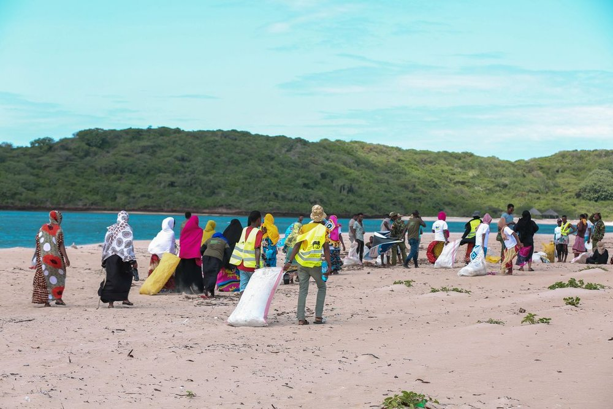

Engagement — Conscience planétaire
Nos 17 Objectifs de Développement Durable
Crise écologique & résilience — une lecture des ODD en termes de leadership, pour renforcer la conscience environnementale en Côte d'Ivoire et en Afrique.
Crise écologique & résilience — une lecture des ODD en termes de leadership, pour renforcer la conscience environnementale en Côte d'Ivoire et en Afrique.
Certifiée par le C3RD, la fondatrice de BMT Green Academy considère essentiel de rendre ce contenu accessible au public ivoirien et africain, afin de renforcer la sensibilisation collective à la crise écologique et encourager une conscience environnementale plus éclairée.
Les 17 Objectifs de Développement Durable adoptés par les Nations Unies sont ici relus comme autant d'appels au leadership : chacun invite à une posture de responsabilité, de dignité et d'action, individuelle et collective.
La fondatrice de BMT Green Academy est certifiée par le C3RD pour porter cette sensibilisation aux ODD auprès du public ivoirien et africain.

Leadership pour une dignité économique et la fin de la pauvreté.
Leadership pour la souveraineté alimentaire et la justice nourricière.
Leadership pour la santé holistique et les droits au bien-être.
Leadership pour une éducation transformationnelle et équitable.
Leadership pour l'accès à l'eau, à l'hygiène et à la dignité environnementale.
Leadership pour le travail éthique.
Leadership pour des villes vivables, inclusives et résilientes.
Leadership pour la sobriété, la circularité et la conscience écologique.
Leadership climatique pour une planète vivante.
Leadership pour la régénération de la nature et des écosystèmes.
Leadership pour la paix, la justice et les institutions éthiques.
À travers ses formations, ses ateliers et ses interventions, BMT Green Academy porte cette lecture des ODD au plus près des institutions, des entreprises et des citoyens, afin d'ancrer une conscience environnementale plus éclairée en Côte d'Ivoire et en Afrique.
Régulation émotionnelle et leadership responsable par l'art-thérapie.
Découvrir →La Collection des Dignitaires et le Festival de la Fraternité.
Découvrir →Contactez-nous pour organiser une session de sensibilisation dans votre institution, école ou entreprise.
Nous contacter sur WhatsApp